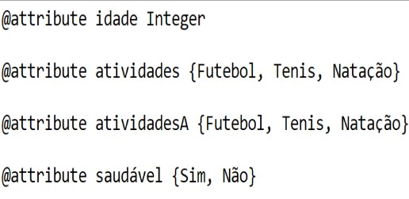
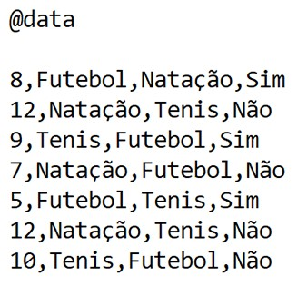

Para criar um Arquivo .ARFF,abra um editor de texto limpo,normalmente vem instalado no seu sistema operacional.
Use a tag @Relation para definir o nome do arquivo (exemplo: @ relation Acampamento). Então para definir o nome do atributo use a tag @Attribute. 
Para criar elementos com valores dos atributos pré-definidos utilize a tag @Data na ordem de criação dos atributos. Então clique em salvar como e salve o arquivo como .ARFF, sendo assim,o Weka poderá interpretar seu arquivo,conseguindo o abrir e ler seus valores. 
© Obrigado por ler.| By Yussuf Gabriel | Implantação de Sistemas.